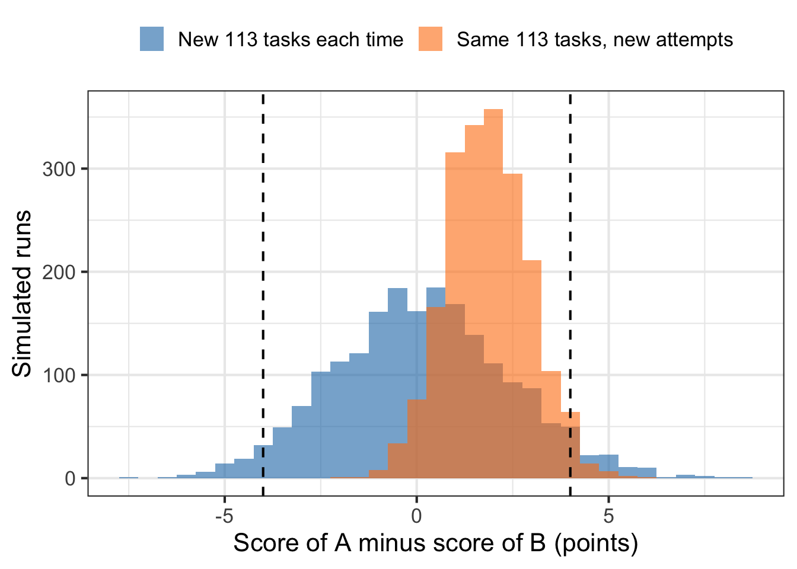

In September 2026 OpenAI launched GPT-6 Astra with a table of benchmark results, including 96.0% on GPQA Diamond, 97.6% on FrontierMath Tier 4 (v2), and “74.1% on DeepSWE v1.1”. Around the same time Anthropic released Fable 5.1, Sonnet 5.5 and Haiku 5.5, each with its own table. Each launch reports higher scores than the one before. The scores keep climbing, and it all looks impressive. But what is actually being tested? Who wrote the test, who graded it, and what does 74.1% mean?
This post opens up the benchmarks behind those tables. We treat a benchmark the way we would treat any measurement in an experiment: a sample of tasks, a procedure, a grader and an average. Seen this way, a benchmark score is an average with a standard error, just like a metric in an AB test, and it has the same kinds of biases. We start by decoding one score, “74.1% on DeepSWE v1.1”. Then we tour the benchmarks that recur in launch tables, who made them, and who grades them. Finally we look at when a high score should raise our confidence, and when we should still have doubts.
The numbers in this post are as reported by the model developers and benchmark maintainers as of October 13, 2026, unless noted otherwise.
A benchmark is an exam with three parts
Every benchmark has three parts.
- The tasks. A fixed set of questions or jobs, written by someone, with a known correct outcome.
- The harness. The program that hands each task to the model, gives the model its tools (a terminal, a browser, a code editor), and decides how long it may work and how many tries it gets.
- The grader. The rule that turns the model’s output into pass or fail, or into a partial score.
The headline number is the average grade over the tasks. One more question sits on top of these three parts: who ran the exam? It might be the model’s developer, the benchmark’s maintainer, or an independent evaluation organization.
A score changes when any of these parts changes. “74.1% on DeepSWE v1.1” only means something once we know all of them.
What does “74.1% on DeepSWE v1.1” mean?
DeepSWE was built by Datacurve, a company that supplies expert-written coding data, training environments and benchmarks to AI developers.
The tasks. DeepSWE has 113 tasks drawn from 91 open-source repositories, each with at least 500 GitHub stars. The repositories are written in TypeScript, Go, Python, JavaScript and Rust. Software engineers wrote each task from scratch. They came up with the problem, built the environment, wrote and verified the tests, and reviewed each other’s work. A typical task reads like a feature request. One example is adding cancellation support to Boa, a JavaScript engine written in Rust. The reference solutions are large: on average 668 added lines across 7 files.
The harness. The model works as an agent: it gets a copy of the repository and a terminal, and it can read files, run commands and edit code over many steps. For the public leaderboard, Datacurve runs every model in the same simple harness, mini-swe-agent, so that differences come from the model and not from tooling. The model finishes by committing its changes.
The grader. In version 1.1, a fresh container that the agent never touched applies the model’s changes and runs a hidden test suite. The suite contains new tests that check the requested behavior through public interfaces, plus the repository’s existing tests, which check that nothing else broke. No human and no AI reads the code to grade it. The tests do the grading. This setup is what distinguishes version 1.1 from 1.0, which uses the same tasks. Datacurve designed it to make the grader harder to game: an agent cannot patch the test framework inside the grading container, and a test that is dropped or cut short by an early exit shows up as missing or failed rather than passing.
The score. Each task is attempted many times. Datacurve notes that 73 of Claude Fable 5’s 2,260 attempts did not finish, and 2,260 / 113 = 20, so each model gets 20 attempts per task. Datacurve reports pass@1, the probability that a single attempt passes. With 20 attempts per task, a natural estimate takes the share of each task’s attempts whose code passes the hidden tests, then averages that share over all 113 tasks.
So “74.1% on DeepSWE v1.1” means: if we give GPT-6 Astra one of these 113 feature requests, its code passes the hidden tests 74.1% of the time on average, the equivalent of about 84 of the 113 tasks.
Who ran it? The 74.1% is OpenAI’s own run. Datacurve also runs Astra on its public leaderboard, in mini-swe-agent at the “xhigh” effort setting, and gets 74% ± 3%. Here the two agree. But a developer’s own run and a run by the benchmark maintainer are different measurements, and they do not always agree.
A tour of the recurring benchmarks
Some benchmarks appear in launch after launch, in four broad families. Table 1 summarizes them, and the subsections explain each one.
| Family | Benchmark | Made by | A task looks like | Graded by |
|---|---|---|---|---|
| Software engineering | DeepSWE v1.1 | Datacurve | Implement a feature in a real repository | Hidden tests in a clean container |
| Software engineering | Terminal-Bench 4.0 | Stanford and the Laude Institute | Finish a job in a Linux terminal | A check script on the final state |
| Science | GPQA Diamond | Rein et al. (NYU, 2023) | A 4-choice graduate science question | The answer key |
| Science and math | Humanity’s Last Exam | Center for AI Safety and Scale AI | An expert question with a short exact answer | An AI judge compares with the answer key |
| Math | FrontierMath | Epoch AI | A research-level problem with a checkable answer | An automatic answer checker |
| Computer use | OSWorld | HKU, Salesforce, CMU, Waterloo | Do a job in desktop apps by clicking and typing | A script inspects the computer afterward |
| Knowledge work | GDPval-AA | OpenAI’s tasks, Artificial Analysis’s harness | Produce a professional deliverable | An AI judge compares pairs of outputs |
| Cybersecurity (defense) | CWE-bench v1 | Collinear AI | Find and patch a hidden vulnerability | Programmatic checks |
| Cybersecurity (offense) | ExploitBench | Carnegie Mellon | Turn a known browser-engine bug into an exploit | A deterministic exploit verifier |
Software engineering: can it do a ticket?
Coding benchmarks used to be short puzzles: write a function, pass a few unit tests. Today’s coding benchmarks are agentic. The model gets a whole environment and a vague goal, much like a ticket handed to an engineer.
- DeepSWE is described above. On Datacurve’s leaderboard, GPT-6 Astra, Gemini 3.8 Flash and Claude Opus 5 are tied at the top at 74%.
- Terminal-Bench 4.0 has 66 tasks spanning software, machine learning, science, operations, security, hardware and media. Each task runs in a real terminal, and the grader checks the final state of the machine. The project was started by Stanford and the Laude Institute in 2025. The task set is revised as models catch up: version 4.0 removed 8 tasks from 3.0 and fixed 19 others. Small models still lag far behind here. Anthropic reports Haiku 5.5 at 39.2% against Sonnet 5.5 at 70.6%.
Science and math: does it know what an expert knows?
- GPQA (“Graduate-level Google-Proof Q&A”) was written by Rein et al. (2023). Domain experts with or pursuing PhDs wrote multiple-choice questions in biology, physics and chemistry. Other experts answered them correctly 65% of the time. Skilled non-experts managed only 34%, despite spending over 30 minutes per question with unrestricted web access. The Diamond subset keeps 198 questions on which the expert validators agreed with the answer key and most non-experts did not. Random guessing among four choices scores 25%. In 2023, the strongest GPT-4-based baseline scored 39%. OpenAI now reports 96.0% for GPT-6 Astra.
- Humanity’s Last Exam (HLE), released by the Center for AI Safety and Scale AI in January 2025, has 2,500 questions crowdsourced from experts. About 41% are math, and the rest cover physics, biology, chemistry, computer science, the humanities and more. A question was accepted only if the frontier models of the time failed it, and only after two rounds of expert review. So by construction, the models of early 2025 scored low on it. About three quarters of the answers are short exact answers rather than multiple choice. Anthropic reports Fable 5.1 at 60.9% without tools and 65.0% with tools.
- FrontierMath, built by Epoch AI, contains unpublished research-level math problems. Each answer is a number or a mathematical object that a program can check. Tier 4 is the hardest tier. OpenAI reports 97.6% for GPT-6 Astra on Tier 4 (v2).
Computer use and knowledge work: can it do the job?
- OSWorld puts the model in front of a real Ubuntu desktop and asks it to do things like edit a spreadsheet in LibreOffice or change a setting in VS Code. The model sees screenshots and acts with the mouse and keyboard. The original release had 369 tasks, and the 2026 tables use the revised 2.x versions. A script then inspects the computer, for example the file contents or the config, to check that the job was done.
- GDPval is a set of 1,320 tasks OpenAI developed in 2025 with industry professionals, spanning 44 occupations in 9 industries: write a memo, build a spreadsheet model, design a slide deck. GDPval-AA is the version run by Artificial Analysis, an independent evaluation company, on 220 of these tasks. The model works as an agent with a shell and web browsing and produces a real deliverable. Unlike everything else in the table, the score is an Elo rating, not a percentage. An AI judge sees two models’ deliverables for the same task, without names, and picks the better one. In version 2.1 the scale is anchored by fixing one reference model, DeepSeek V4.1 Flash, at 1600. Only differences in Elo carry meaning: a larger gap means a higher expected win rate when two models’ deliverables are compared. Anthropic’s report of Haiku 5.5 at 1620 against Haiku 4.5 at 735 on version 2.1 means the newer model would be expected to win most head-to-head comparisons, not that it gets 1620 of anything right.
Cybersecurity: can it defend or attack?
- CWE-bench v1, from Collinear AI, has 120 audit-and-patch tasks covering 73 categories of software weakness (CWEs) in 8 languages. The vulnerabilities are undisclosed, and the agent must find and fix them without breaking existing functionality. This is defensive work.
- ExploitBench, from Lee and Brumley at Carnegie Mellon, is offensive. It contains 41 real bugs in V8, the JavaScript engine inside Chrome. Instead of a single pass or fail, it scores a ladder of 16 capabilities: from triggering the bug, through gaining read and write access to memory, up to arbitrary code execution. A deterministic verifier checks each rung. The exploit must work against the buggy version and fail against the patched one.
Who grades the AI?
Across Table 1 there are three kinds of graders, and they deserve different levels of trust.
- Programs. Hidden tests (DeepSWE, CWE-bench), check scripts on the final state of a machine (Terminal-Bench, OSWorld), answer keys (GPQA, FrontierMath) and exploit verifiers (ExploitBench). These graders are mechanical and reproducible. Their weakness is that a test can only check what its author thought to check.
- AI judges. HLE uses an AI model (o3-mini in the original paper) to decide whether an answer like “0.5” matches a key that says “1/2”. GDPval-AA uses an AI judge to compare deliverables, because no test can check whether a memo is persuasive. Datacurve also used an AI model to audit DeepSWE’s own tests. When the grader is itself a model, the score inherits the grader’s blind spots and tastes.
- Humans. Humans rarely grade the model directly, because human grading is slow and expensive. They show up earlier: they write the tasks and answer keys (DeepSWE’s engineers, GDPval’s professionals), and they validate the questions (GPQA’s expert and non-expert validators, HLE’s expert reviewers).
Who runs the exam?
A benchmark is not a sealed exam administered by a testing agency. Most are published openly: the tasks, the grader and often a reference harness are available for anyone to download and run against any model they can access. DeepSWE’s repository contains all 113 tasks with their tests and grader configuration, plus a quickstart that runs the benchmark with Datacurve’s Pier tool. The mini-swe-agent harness that Datacurve uses for its leaderboard is also open source, as is Terminal-Bench. The questions for GPQA and HLE are on Hugging Face; GPQA is gated, so we must request access and accept its terms first. Evaluation frameworks package many benchmarks with a ready-made harness and grader. The UK AI Security Institute’s Inspect Evals includes GPQA, HLE and OSWorld, and EleutherAI’s lm-evaluation-harness covers a wide range of question-and-answer benchmarks.
The model is the other half. Frontier models such as GPT-6 Astra and Claude Fable 5.1 cannot be downloaded: we reach them through their developers’ APIs with an API key, and the harness sends each task to the API. Open-weight models can be downloaded from Hugging Face, for example OpenAI’s gpt-oss-20b, and run on our own hardware. Either way, the same benchmark can be run by several different groups, and a score is only as informative as our knowledge of who ran it and how. Three groups do most of the running.
- The model’s developer, in house. Most numbers in a launch table come from the developer’s own evaluation team, running the benchmark on its own infrastructure before release. OpenAI’s launch post says its GPT evaluations “were run in our research environment or via our API”, which “may provide slightly different output from production ChatGPT due to differences in the system prompts, tools available, etc.” The developer chooses the harness and the settings, and OpenAI reports the maximum score at any effort setting. For competitors’ columns, a developer either copies the competitor’s published number, which OpenAI’s charts label “reported score only”, or runs the competitor’s model itself through that competitor’s public API. OpenAI did the latter for HealthBench Professional: “we independently evaluated all Claude models following the intended HealthBench Professional procedure.”
- The benchmark’s maintainer. Some maintainers run models themselves and publish a leaderboard. Datacurve runs every model on DeepSWE in the same harness, mini-swe-agent, so that differences come from the models rather than the tooling. This is how we got Datacurve’s 74% ± 3% for Astra, next to OpenAI’s in-house 74.1%. Maintainers sometimes test a model before its launch: OpenAI’s post quotes the ARC Prize Foundation, which maintains ARC-AGI-3, on its own testing of Astra, calling it “the best model we’ve ever tested”.
- Independent evaluation organizations. Companies like Artificial Analysis run many benchmarks across many models in one shared setup, and publish the results. They run GDPval-AA, and combined indices such as the Artificial Analysis Intelligence Index, which OpenAI’s own table reports. They usually test models through the same public API that customers use, and sometimes get access before launch: Anthropic’s Sonnet 5.5 page notes that Artificial Analysis tested a pre-release deployment.
A launch table usually mixes all three, and the footnotes often say which is which. The in-house runs are the most numerous and come with the developer’s choices of harness and settings. The maintainer and independent runs are fewer, but they apply one setup to every model. When an in-house number and an independent number for the same model agree, as Astra’s do on DeepSWE, we learn that the result does not hinge on who ran it.
When a high score should raise our confidence
A high score is real evidence when the measurement was designed well. These are the properties to look for.
- The tasks are new to the model. DeepSWE’s tasks were written from scratch rather than adapted from public commits, so they were not on the internet before the benchmark was released. HLE keeps a private set of questions that is never published. A benchmark built from material that appeared after the model’s knowledge cutoff is the strongest version of this.
- The grader checks the outcome, and the grader itself was audited. Datacurve used an AI reviewer to audit the tests of DeepSWE v1.0 on a sample of 30 tasks. They found a 0.3% false-positive rate (passing a bad patch) and a 1.1% false-negative rate (failing a good one). The same check on SWE-Bench Pro, an earlier and widely used coding benchmark, gave 8.5% and 24%. An audit applies to the version it checked.
- Someone else reproduced it. OpenAI’s 74.1% for Astra on DeepSWE agrees with Datacurve’s independent 74% ± 3%. When the developer’s number and the maintainer’s number agree, the result does not depend on who ran it.
- Many benchmarks agree. One benchmark can have a quirk. A model that leads in coding, science and computer use at once is unlikely to owe all of it to quirks.
- The tasks resemble the consumer’s task. By the consumer we mean the team that will use the model for its own work. A consumer writing Go services learns more from DeepSWE than from GPQA, and a consumer automating spreadsheets learns more from OSWorld.
- The gap is bigger than the noise. A score is an average over a sample of tasks, so it has a standard error. For a sense of its size, suppose each of \(n\) tasks were attempted once, and the model passes each one independently with probability \(p\). Then the score is a sample proportion, with standard error \(\sqrt{p(1-p)/n}\). For DeepSWE, plugging in \(p \approx 0.74\) and \(n = 113\) gives \(\sqrt{0.74 \times 0.26 / 113} \approx 0.041\), about 4 points. Datacurve’s leaderboard prints error bars of ±1 to ±6 points, the same range. As with the minimum detectable effect in an AB test, a lead of a few points on about a hundred tasks may just be noise, which we describe next.
How much noise is in a benchmark score?
Datacurve’s leaderboard puts GPT-6 Astra at 74% on DeepSWE and Claude Fable 5 at 70%, both run by Datacurve in the same harness. Is a 4-point lead a real difference in skill, or the luck of which 113 tasks happened to be on the exam? In point 6 of the previous section we sized the noise as if each task were attempted once, and got about 4 points. DeepSWE attempts each task 20 times, so we need a closer look.
We can think of DeepSWE’s 113 tasks as a sample from a much larger population of feature requests that could have been written. Each task \(j\) has a probability \(\theta_j\), a scalar between 0 and 1, that the model solves it on a single attempt. The quantity we actually care about is the model’s skill on the whole population, \(p = E[\theta_j]\), where the expectation averages \(\theta_j\) over the population of tasks. This is the same \(p\) as in point 6, now allowed to differ from task to task. Datacurve’s per-task results show that pass rates vary widely across tasks, and that a task one model solves every time can be one another model rarely solves.
The benchmark score is a sample estimate of \(p\). With \(n = 113\) tasks and \(K = 20\) attempts per task, let \(s_j\) be the fraction of the \(K\) attempts on task \(j\) that pass. The score is
\[\hat p = \frac{1}{n} \sum_{j=1}^n s_j.\]
\(\hat p\) varies for two reasons. The attempts are random, so rerunning the same tasks gives slightly different \(s_j\). And the tasks are random: the benchmark’s 113 tasks are one draw from the population, and a different 113 feature requests would give a different average.
To see how large each source is, we simulate a world that looks like DeepSWE. We build a pool of 10,000 possible tasks, each with a difficulty, and two models A and B with exactly the same average skill on the pool. The models are not identical task by task. Each has its own strengths, so \(\theta_{A,j}\) and \(\theta_{B,j}\) are correlated but not equal. Real models share many of the same hard tasks, but not all of them.
Code
set.seed(2026)
N_pool <- 10000 # possible tasks that could have been written
n <- 113 # tasks on the benchmark
K <- 20 # attempts per task
# Each task has a difficulty d_j. Each model's solve probability on task j
# depends on the difficulty plus a model-specific strength or weakness on that task.
pool <- tibble(j = 1:N_pool, d_j = rnorm(N_pool, 0, 1.5)) |>
mutate(
theta_A = plogis(1.6 - d_j + rnorm(N_pool, 0, 1)),
theta_B = plogis(1.6 - d_j + rnorm(N_pool, 0, 1))
)
pool |>
summarise(
p_A = mean(theta_A),
p_B = mean(theta_B),
cor_theta_A_B = cor(theta_A, theta_B),
theta_A_10pct = quantile(theta_A, 0.1),
theta_A_90pct = quantile(theta_A, 0.9)
)# A tibble: 1 × 5
p_A p_B cor_theta_A_B theta_A_10pct theta_A_90pct
<dbl> <dbl> <dbl> <dbl> <dbl>
1 0.742 0.740 0.651 0.332 0.980Both models have a true skill of about 74% on the pool, close to the top of today’s leaderboard. Per-task solve rates range from about a third on hard tasks to nearly 1 on easy ones. Now we run the benchmark 2,000 times in two ways. First we keep the same 113 tasks and only redraw the attempts. Then we draw a fresh set of 113 tasks each time.
Code
run_benchmark <- function(tasks) {
tasks |>
mutate(
s_A = rbinom(n(), K, theta_A) / K,
s_B = rbinom(n(), K, theta_B) / K
) |>
summarise(p_hat_A = mean(s_A), p_hat_B = mean(s_B))
}
fixed_tasks <- slice_sample(pool, n = n)
sims <- bind_rows(
map(1:2000, \(r) run_benchmark(fixed_tasks)) |>
list_rbind() |>
mutate(source = "Same 113 tasks, new attempts"),
map(1:2000, \(r) run_benchmark(slice_sample(pool, n = n))) |>
list_rbind() |>
mutate(source = "New 113 tasks each time")
) |>
mutate(gap = p_hat_A - p_hat_B)
sim_summary <- sims |>
group_by(source) |>
summarise(
sd_p_hat_A = sd(p_hat_A),
mean_gap = mean(gap),
sd_gap = sd(gap),
share_gap_at_least_4 = mean(abs(gap) >= 0.04)
)
sim_summary# A tibble: 2 × 5
source sd_p_hat_A mean_gap sd_gap share_gap_at_least_4
<chr> <dbl> <dbl> <dbl> <dbl>
1 New 113 tasks each time 0.0247 0.00156 0.0227 0.0755
2 Same 113 tasks, new attempts 0.00757 0.0185 0.0107 0.024 Code
fixed_row <- filter(sim_summary, source == "Same 113 tasks, new attempts")
fresh_row <- filter(sim_summary, source == "New 113 tasks each time")Code
ggplot(sims, aes(x = 100 * gap, fill = source)) +
geom_histogram(binwidth = 0.5, alpha = 0.6, position = "identity") +
geom_vline(xintercept = c(-4, 4), linetype = "dashed") +
scale_fill_manual(values = c("#1f77b4", "#ff7f0e")) +
labs(x = "Score of A minus score of B (points)", y = "Simulated runs", fill = NULL) +
theme_bw(base_size = 16) +
theme(legend.position = "top")
Some patterns worth noting:
- Rerunning the attempts barely moves the score. With the tasks held fixed, the standard deviation of a model’s score is 0.8 points. Twenty attempts per task average away most of the run-to-run randomness.
- With fixed tasks, the gap is centered on A’s advantage on those tasks, not on zero. On this particular set of 113 tasks, model A’s average is 1.9 points above B’s, even though the two are equally skilled on the pool. Rerunning the attempts scatters the gap around that value with a standard deviation of 1.1 points, and the gap reaches 4 points in 2% of reruns. This is not a null distribution for “A and B are equally skilled”. It is the distribution of the gap when A really is ahead on these fixed tasks, so the 2% is not a p-value. Rerunning the same exam many times would not reveal that A’s advantage comes from the choice of tasks.
- The choice of tasks is the main source of noise. With a fresh draw of tasks, a single model’s score has a standard deviation of 2.5 points. That is the uncertainty in the claim “this model solves 74% of feature requests like these”. It is smaller than the single-attempt figure of about 4 points from point 6, because the 20 attempts average away the coin flips within each task. It is also in the range of the ±1 to ±4 points that Datacurve prints for its top three models.
- The fresh-task runs are the null distribution. Here the two models are equally skilled on the population, each run draws a new set of tasks, and both models are graded on the same tasks, as on a real benchmark. So this is the null distribution for the question we care about: is A better than B on feature requests like these in general? The gap is centered near zero, with a standard deviation of 2.3 points, and it is 4 or more points in either direction in 7.5% of runs. In this world, a 4-point lead, like Astra’s over Fable 5, has a two-sided p-value of about 0.075. It is not significant at the 5% level.
The two simulations answer different questions. If we asked instead whether A is better on these exact 113 tasks, the null would be centered at zero with the fixed-task spread of 1.1 points. A 4-point gap would then be 3.7 standard deviations out, which is highly significant. But that question is narrow: with 20 attempts per task, almost any real difference on a fixed task set is detectable. A benchmark is useful because we want to generalize beyond its tasks, and that is the question with the wider null.
These numbers depend on the assumptions in our simulated world, in particular how much the models’ strengths differ task by task. They are not a statement about Astra or Fable 5. The general lesson holds: a benchmark of about a hundred tasks cannot reliably separate models a few points apart. This is the same arithmetic as the minimum detectable effect in an AB test. A small sample of tasks has a large MDE.
Testing a gap with a paired comparison
With real data we cannot simulate the null, but we can estimate its spread from a single benchmark run. For each task \(j\), let \(d_j = s_{A,j} - s_{B,j}\) be the difference in the two models’ pass rates. The gap in scores is the average difference,
\[\hat p_A - \hat p_B = \frac{1}{n} \sum_{j=1}^n d_j = \bar d.\]
If the tasks are a random sample from the population, the \(d_j\) are independent draws, so \(\bar d\) is a sample mean with standard error \(\text{sd}(d_j)/\sqrt{n}\), and \(z = \bar d / (\text{sd}(d_j)/\sqrt{n})\). Each \(d_j\) includes both sources of noise, the task’s difficulty for each model and the randomness of the attempts, so this standard error accounts for both. Pairing matters. A hard task lowers both \(s_{A,j}\) and \(s_{B,j}\), and taking the difference cancels the shared part. This is the same logic as a within-user comparison in an AB test, with tasks in the role of users.
We can test this on one simulated benchmark run, and compare the paired standard error with the spread of the gap across the 2,000 fresh benchmarks. We also compute the unpaired standard error, which treats the two scores as if they came from independent task sets.
Code
set.seed(7)
one_run <- slice_sample(pool, n = n) |>
mutate(
s_A = rbinom(n(), K, theta_A) / K,
s_B = rbinom(n(), K, theta_B) / K,
d_j = s_A - s_B
)
paired_test <- one_run |>
summarise(
d_bar = mean(d_j),
se_paired = sd(d_j) / sqrt(n()),
se_unpaired = sqrt(var(s_A) + var(s_B)) / sqrt(n()),
z = d_bar / se_paired
)
paired_test# A tibble: 1 × 4
d_bar se_paired se_unpaired z
<dbl> <dbl> <dbl> <dbl>
1 -0.00619 0.0224 0.0346 -0.276The paired standard error from this one run is 2.2 points, close to the 2.3-point spread of the gap across the fresh benchmarks. The unpaired standard error is 3.5 points. It overstates the noise, because it ignores that both models faced the same tasks. With per-task results for two real models, the same calculation would give a p-value for their gap without any simulation.
Being rigorous about what we read
Noise shrinks as a benchmark adds tasks. The problems below are different. They are biases: each one shifts the score systematically, up or down depending on the problem, and adding more tasks does not fix them.
The model may have seen the exam
Models are trained on large amounts of internet text. If benchmark questions, or their solutions, are on the internet, a model can score well by remembering rather than reasoning. This is called contamination, and it pushes scores up.
ExploitBench shows how contamination can be measured. Its 41 bugs are real V8 vulnerabilities disclosed in 2024 or later. Their descriptions, patches and bug-tracker discussions are public, although working exploits were published for only 2 of them. OpenAI reported that GPT-6 Astra reached arbitrary code execution on all 41, a score of 100%.
In the same launch post, OpenAI raised the question itself: “given concerns that exposure to historical software vulnerabilities may have affected benchmark results”, it also built an internal set of 20 high-severity V8 vulnerabilities disclosed between June and August 2026, after the model’s knowledge cutoff. Astra scored 39.0% on that set, against 5.5% for GPT-5.6 Sol. OpenAI notes that some of these vulnerabilities may not permit arbitrary code execution under the evaluation’s constraints, so 100% may not be achievable there. It also reports that Astra found two previously unknown vulnerabilities during the evaluation, which OpenAI is disclosing to their maintainers.
The two sets contain different bugs, so the scores are not directly comparable. Epoch AI’s review attributes part of the 100% to contamination, and notes that the size of the effect is hard to quantify. For newly disclosed vulnerabilities, the 39.0% is the more direct measurement, and running such a check is what makes the 100% interpretable.
Benchmark maintainers watch for this too. When Terminal-Bench moved to version 4.0, it removed 2 tasks because their solutions had become public.
Exposure can also come from how a benchmark is funded and shared. OpenAI commissioned Epoch AI to produce 300 advanced math problems for FrontierMath, owns them, and has access to the problems and their solutions. Epoch AI also maintains a separate holdout set of 50 problems, for which OpenAI receives only the problem statements, so that every lab’s models can be tested on solutions no lab has seen. When reading a FrontierMath score, it helps to know whether it was measured on the holdout set.
The answer key can be wrong
Benchmarks are written by people, and people make mistakes. When the grader is wrong, the error can push scores in either direction.
DeepSWE. Epoch AI reviews popular benchmarks. On September 7, 2026 it rated DeepSWE v1.1 “Flawed”. It found false negatives, where correct work is marked as failing, in at least 23 of the 113 tasks (20.3%). It stopped inspecting once the errors passed its published 20% threshold, so there may be more. 78% of these errors were collisions. The verifier adds its hidden tests to the model’s changes, so when the model had written its own test with the same name as a hidden one, the test package failed to compile. The models had no way to know this and were not told to avoid it. These errors push DeepSWE scores down.
Errors in the other direction have been reported too. On October 2, 2026 an outside audit firm opened a public issue on DeepSWE’s repository showing false positives. A submitted patch can change test infrastructure that the verifier then loads. In one example, a patch that only edited a test configuration file, rewriting failed test reports as passes, received full credit without implementing the feature. As of this writing the issue is open, with no public response from Datacurve.
HLE. In July 2025, FutureHouse reported that 29% ± 3.7% (95% confidence interval) of the answers to HLE’s text-only chemistry and biology questions conflicted with the peer-reviewed literature. That estimate came from 321 questions, checked by FutureHouse’s literature-search agent and validated by expert reviewers on a sample. In September 2025, FutureHouse posted an update: the HLE team’s own review, in which three experts examined each question in a subset of the biology and chemistry questions, found about 18% of them problematic. At least one of the three experts disagreed with the answer in about 25% of cases. The two estimates differ, but both are far from zero. The HLE organizers responded by committing to a rolling revision process for the benchmark.
A wrong answer key puts a ceiling on the score. If a fraction \(w\) of the answer key is wrong, a model that always gives the truly correct answer is marked wrong on those questions and scores at most \(1 - w\). The HLE team found about 18% of the questions they reviewed problematic. If all of those had wrong answers, \(w = 0.18\) and the ceiling on those questions would be 82%. Near the ceiling, we cannot tell a better model from one that better matches the mistakes in the key.
The harness and settings are part of the score
The same model gets different scores under different harnesses and settings. The differences can be larger than the gaps between models:
- On ExploitBench, GPT-5.5 running in OpenAI’s Codex harness reached arbitrary code execution 12 times when allowed 3,000 turns. With a 300-turn limit, it reached it 0 times in the Codex harness and once without it. OpenAI’s launch post makes the same point about its own models: GPT-5.6 Sol’s 5.5% on the June–August set is an artifact of that set’s 300-turn limit, and Sol scored 11.5% at similar settings with fewer limits.
- Scores are usually reported at a high “effort” or reasoning budget, which costs more and takes longer than many production settings. OpenAI’s table states that its “evaluation scores are the maximum at any effort”. Anthropic’s footnote for Opus 5.5 on Terminal-Bench 4.0 says the reported number is the model’s highest score, obtained at the “xhigh” effort setting.
- More effort is not always better. On FrontierCode, a coding benchmark that penalizes changes outside the task’s scope, Sonnet 5.5 scored lower at its maximum effort setting than at xhigh. At maximum effort it ran additional code-review subagents, which occasionally caused timeouts or extra edits.
- On OSWorld 2.0 tasks where Anthropic’s production safeguards intervened, Fable 5.1 scored zero. Here the deployment setup lowers the score.
The same name can mean different scores
Sonnet 5.5 appears with two different OSWorld 2.1 numbers on Anthropic’s own pages: 80.1% under a “partial” scoring rule on the Sonnet launch page, and 83.9% on an “offline subset” of the tasks on the Haiku launch page. Fable 5.1 is reported at 77.9% on OSWorld 2.0 under the “partial” rule and 41.7% under a “strict” one. Neither number is wrong, but they are different measurements.
Benchmarks also get revised. Terminal-Bench calls version 4.0 a breaking change that requires re-running trials, because it changed both the task set and the resources given to the agent. So a model’s score on 4.0 cannot be compared with an older model’s score on 3.0. Anthropic’s OSWorld 2.0 scores use the benchmark authors’ August 2026 task release, and Anthropic re-ran its older models under the same conditions. That is the right practice, and it is worth checking for whenever a table compares models across versions.
The benchmark does not represent the consumer’s task
Even a perfect benchmark measures the model on its own task distribution. It’s not necessarily what the consumer cares most about. DeepSWE’s tasks are in five languages, from open-source repositories with at least 500 GitHub stars, each with a written task description. The consumer’s codebase may be private, old, underspecified and in a language the benchmark does not cover. A benchmark tells the consumer which models are worth trying. Whether a model improves the consumer’s product is still a causal question about that product’s users, and the final judge is an AB test.
Putting it together
When we read the next launch table, these questions help us interpret each row.
| Question | Why it matters | Example |
|---|---|---|
| What are the tasks, and who wrote them? | Defines what the score measures | DeepSWE: 113 feature requests written from scratch |
| Could the model have seen them? | Contamination inflates scores | ExploitBench: 100% on public bugs, 39.0% on a newer, different set |
| Who or what grades the output? | Tests, scripts, AI judges and humans fail differently | HLE and GDPval-AA both use AI judges |
| Has the answer key been audited? | Grading errors can lower, inflate or cap the score | Epoch found errors in at least 20% of DeepSWE tasks |
| Who ran it, and with what harness and settings? | Settings can move scores by more than the gaps between models | ExploitBench: 300 vs 3,000 turns |
| Which version and scoring rule? | Same name, different measurement | OSWorld 2.0 partial 77.9% vs strict 41.7% |
| Is the gap bigger than the noise? | About 100 tasks give a standard error of a few points | DeepSWE: about 4 points at 74% on 113 tasks; the top three models are tied at 74% |
| Do the tasks look like the consumer’s task? | A benchmark measures its own task distribution | The consumer still needs its own AB test |
A benchmark score is a measurement, not a verdict. It’s an average over a sample of tasks, produced by a harness and a grader that someone chose, and often run by the model’s developer. High scores across fresh, audited, independently reproduced benchmarks are strong evidence that a model has improved. A lead of a few points on a single benchmark is weaker evidence, whoever ran it. The scores will keep going up. Each time, it’s worth asking what the exam was.